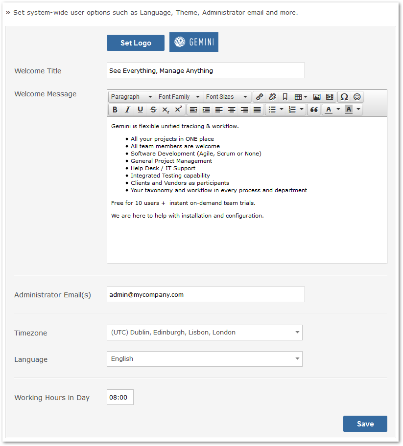

Global Options

You may set the following global options.
- Welcome Title: Message shown to users when the first arrive
- Welcome Message: Welcome message to accompany the Welcome Title
- Administrator Email(s): Comma separated list of email addresses to which system messages will be sent
- Language: Default language for the system, to be applied to all new users - individuals can change their language and locale settings
- Theme: If you develop a custom theme you select it here
- Working Hours in a day: Placeholder for reporting algorithm to turn hours/minutes of effort into days